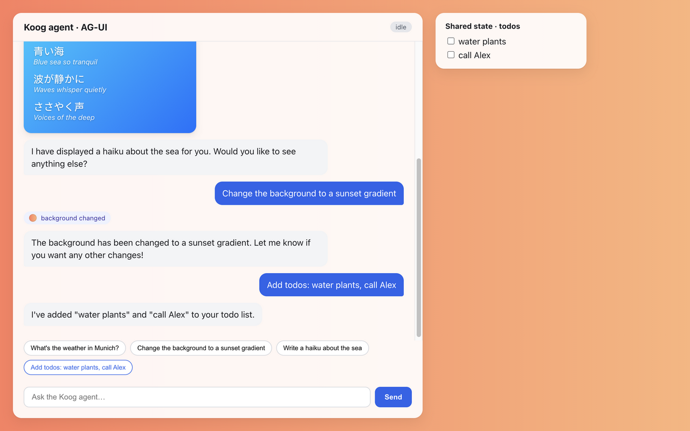

Koog × AG-UI: how it was done
This page covers the AG-UI protocol adapter for JetBrains Koog: what was built, what had to be worked around, and how it was checked. Date: 29 September 2026.
koog-agui + koog-agui-ktor)@ag-ui/client verifierFiles
| Area | Files | Lines |
|---|---|---|
Library koog-agui | KoogAgUiAgent.kt (run loop), AgUiStreamTranslator.kt (frames to events), Events.kt, Types.kt (wire model), SseEncoder.kt, MessageConversion.kt, JsonSchemaToolDescriptors.kt | 901 |
Library koog-agui-ktor | AgUiRouting.kt: Route.agUi(path) { agent } | 63 |
| Tests | KoogAgUiAgentTest, MessageConversionTest, WireAndTranslatorTest, TestSupport (scripted LLM, Kotlin port of the verifier rules), AgUiRoutingTest | 699 |
| Example | example/server/Main.kt (Ktor + OpenAI), example/web (React on @ag-ui/client), scripts/e2e.ts, styles.css | 561 |
| Docs | SPEC.md, README.md, this page | ≈ 469 |
| Build | settings.gradle.kts, build.gradle.kts, 3 module builds, libs.versions.toml, Vite/TS config, .gitignore | ≈ 169 |
How it fits together
Browser
@ag-ui/client HttpAgent. Sends the history, the frontend tools, the state and the context.
koog-agui-ktor
POST /agent. Decodes RunAgentInput and streams data: {json}\n\n.
KoogAgUiAgent
Builds a Koog prompt from the history. Registers frontend tools as descriptors only. Owns the tool loop.
Koog AIAgent
Functional strategy with requestLLMStreaming(). Runs backend tools with executeTool. Features stay installable.
AgUiStreamTranslator
Turns each StreamFrame into TEXT_MESSAGE_*, TOOL_CALL_* and REASONING_* events.
Run loop (one AG-UI request)
RUN_STARTED, then aSTATE_SNAPSHOTif state sharing is on.- Stream one LLM turn. Frames are translated and sent live. The assistant message is appended to the Koog prompt.
- If the turn has no tool calls, stop.
- For each tool call:
update_state: emitSTATE_SNAPSHOT. No tool-call events are sent for it.- Backend tool: Koog executes it and
TOOL_CALL_RESULTis emitted. - Frontend tool: mark it pending.
- If any frontend call is pending, stop. The browser runs the tool and starts a new run with the result. Otherwise go back to step 2, up to
maxTurnsturns. RUN_FINISHEDwithoutcome: {type:"success", pendingToolCallIds}. Any exception producesRUN_ERRORinstead.
What had to change
Nothing was modified in Koog or AG-UI. All the work is additive and uses public Koog 1.3.0 APIs and the published @ag-ui/client 1.0.0. These are the points where the obvious approach did not work:
| Problem | Resolution |
|---|---|
designKoog's singleRunStrategy tries to execute every tool call. For a browser-only tool it fails with "tool not found" and feeds that error back to the model. | Use our own functionalStrategy that owns the loop and stops at frontend calls. The Spring AI adapter does the same: it switches off Spring AI's tool execution. |
designA Koog Feature can observe events but cannot stop the agent loop. | Use a strategy rather than a feature. Callers can still install features through installFeatures. |
designThe community Kotlin AG-UI SDK (0.4.1) lags spec 1.0. It fails on reasoning messages and on tools without parameters, and it rejects empty text deltas. | Write a small, lenient wire model of our own with kotlinx.serialization. Unknown roles decode to UnknownMessage. |
| gotchaKoog streaming does not add the answer to the prompt history. | Build the assistant message from the translator and append it after each turn. Tool call ids match the ids the browser saw. |
| gotchaKoog cannot accept a raw JSON Schema for a tool. | Add JsonSchemaToolDescriptors, which maps a JSON Schema onto ToolParameterType. It is modelled on Koog's MCP parser and handles $ref, enum, nullable types and nested objects. |
| gotchaKoog flattens historical tool calls into plain text when the tool is not advertised. | Advertise the frontend tool descriptors on every request. |
gotchaThe client's zod schemas reject null in optional fields. | Set explicitNulls = false so absent fields are omitted, and test it. |
gotchaInside Koog's context, config refers to Koog's agent config and hides ours. | Capture our settings explicitly (this@KoogAgUiAgent.config). |
| envpnpm 11 blocks esbuild's build script, which Vite and tsx need. | Add allowBuilds: esbuild to pnpm-workspace.yaml. The example server uses port 8787 by default (override with PORT). |
bugA React effect returned the Promise from scrollIntoView and crashed the app. The browser check caught it. | Give the effect a block body. |
Biggest things
- The frontend-tool round trip works. The model calls
change_backgroundorgenerate_haiku. The run ends withpendingToolCallIds. The browser renders the UI, sends the tool result and re-runs, and the model then confirms what it did. - Streaming maps 1:1. Koog streams one segment at a time (text, reasoning, tool call), and each segment ends with a
*Completeframe. That lines up with AG-UI's start/content/end events. The translator also covers providers that send only complete frames, calls without an id, and a tool name that arrives late. - Shared state goes through an
update_statetool. The UI sees it as a state snapshot, not a tool call. - Improvements over the Spring AI adapter:
contextis passed to the model, turns that mix backend and frontend calls are handled, and the run reportspendingToolCallIds.
Review pass (keep it short)
- trimRemoved unused events (
STEP_*,STATE_DELTA,MESSAGES_SNAPSHOT,CUSTOM) and the untestedemitStepsoption. They are follow-ups in the spec. - trim
KoogAgUiAgentshrank from 223 lines (it is 197 after all review rounds, which also added features). Removed astatevariable that was written but never read, theconfig/agUiConfigalias and theProducerScopereceiver trick. - trimTranslator: the two duplicated tool-call branches became
startCallandPendingCall.continuedBy. - trimKtor route: merged two catch blocks, because
SerializationExceptionis anIllegalArgumentException. Also removed redundant@SerialNameannotations and unused imports. - Result: library code went from 1,014 to 934 lines after this pass. Later rounds added reasoning replay, error codes and fixes; it is 964 lines now.
Compared with other AG-UI adapters
Reviewed against Spring AI (Java), LangGraph (Python), Mastra (TypeScript) and the Python server starter. Verdict: on par, better in places, no structural hacks.
| Concern | Others | Koog adapter |
|---|---|---|
| Frontend tools | Spring uses placeholder callbacks and never sets pendingToolCallIds. Mastra passes the raw schema through. | better: descriptor-only tools, stop at the call, pendingToolCallIds per spec |
| Stream state machine | Spring can send args before the tool name is known. | better: late names, missing ids, complete-only frames |
| Shared state | Spring ends the turn after update_state and offers an optional STATE_DELTA. | equal: keeps looping so the model can still reply; STATE_DELTA is a follow-up |
| Context | Spring ignores it. LangGraph and Mastra pass it into agent state. | equal or better: sent as a system message |
| Transport | Same data: framing everywhere. | equal: also sends Cache-Control and X-Accel-Buffering; 400 on bad input |
| Attachments and history reasoning | LangGraph maps media; Spring replays reasoning. | behind: text placeholder; reasoning-role history dropped (follow-up) |
Fixed after the comparison:
- Reasoning, including provider signatures, is now kept in history within a run. Without this, reasoning models could fail on the second turn of a tool loop.
- Parts are kept in arrival order, so text that follows a tool call is no longer moved in front of it.
- Removed the magic
maxTurns*4+10. Koog does not apply its iteration limit to functional strategies. Running out of turns now givesRUN_ERRORwith codemax_turnsinstead of a silent success. - Stable error codes
agent_errorandmax_turnsreplace Java class names. update_statenow requires astateobject or array. Previously{}wiped the state.- The initial
STATE_SNAPSHOTis sent only when the client sent state (same as Spring). RemovedisLenient. - The example client takes the agent URL as a parameter instead of sniffing
processorimport.meta.
Code review before publishing
A two-axis review (coding standards, and faithfulness to SPEC.md) ran on the full commit. Fixed:
- The default state prompt now uses the configured
stateToolName; it no longer hardcodesupdate_state. - A client tool named
update_stateis only reserved when state sharing is on. - The Ktor route no longer tries to write
RUN_ERRORafter the client has disconnected. Error mapping is shared throughThrowable.toRunErrorEvent(). - User content parts map to separate Koog text parts.
SseEncodermoved to its own file, and the frontend-call list was renamed topendingFrontendCallIds.- Message-conversion, routing-error and custom state-tool tests added. The spec and README now match the code.
- The disconnect catch is narrowed to
ClosedByteChannelException, so upstream I/O errors still end inRUN_ERROR.
Kept on purpose: system and developer stay separate types because they are distinct protocol roles. The public constructor parameter stays config for API readability. The outcome object form was confirmed against @ag-ui/client 1.0.0 by the live e2e.
Verification
| Layer | Covers | Result |
|---|---|---|
Unit tests (./gradlew build) | Text streaming, the backend tool loop, frontend stop and replay, mixed turns, the state tool, context, errors, the turn cap, translator edge cases, schema conversion, the wire format and SSE framing | 28 / 28 |
Live e2e (pnpm e2e, gpt-4.1-mini) | Streamed text, get_weather with its result, the change_background round trip, generate_haiku, and adding two todos through state | 5 / 5 |
| Browser | Weather card, haiku card, sunset background, todo panel | rendered |
Screenshot
